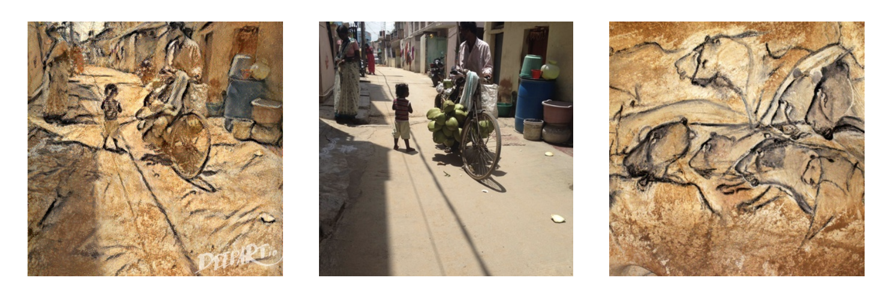

Assignment 3
Due Monday September 24th at 10 AM
1.4: Visualizing convolutional neural networks
The visualization demo below by Adam Harley shows a network with 2 convolutional layers, two fully connected layers, and two max pool layers (for downsampling).
http://scs.ryerson.ca/~aharley/vis/conv/flat.html
After playing with the demo and drawing different kinds of inputs with various features, I observed the following:
1. The network works pretty well for a number that is drawn perfectly straight on the screen.
2. The network is unable to decipher what the number is if it is even a bit slanted.

3. The network is unable to decipher what the number is if it is upside down.
4. The network is able to recognize only some numbers when they are bolded.


5. For a completely colored in image, the network spits out "1". This was consistent behaviour.

It also spits out a random number for invalid inputs.
6. The network gets easily confused for unclear numbers
2. Style Transfer Examples
Style transfer is an application of convolutional neural networks. Given a content image and a style (another image), we can apply a computation that transforms the content to match the selected style.
Here are some of the examples I created on DeepArt:


3.5: Fast Style Transfer
We use the Fast Neural Style Transfer link below for the following question:
https://reiinakano.github.io/fast-style-transfer-deeplearnjs
1. When passing an image through the same filter several times, I noticed that the image changes drastically in the first pass and doesnt change much after passing the filter a 3rd and 4th time. The details in the image get blurred out.

2. The next task that I did is to apply the filter "Rain Princess, Leonid Afremov" to the image above and then apply "The Wave - Katsushika Hokusai" filter to the resulting image from the first filter. The first image has only only the Katsushika Hokusai filter applied, whereas the second picture has both filters applied.

The result is not similar to applying the second filter to the original image as the image has already been transformed by the first filter. The style may be the same but there are different features and details in the two images as shown.
3. Here I have tried different combinations of filters/number of times I filter the image.
Trial 1: Image filtered with "Rain Princess", "La Muse", "Udnie", "The Wreck of the Minotaur", "The Wave" and "The Scream" respectively. We start with the original image below. The final image does not looks very different to what it would have looked like had we only applied "The Scream" filter (the last image shown in this series).


3.6 Building CNNs with code
Here, I investigate several choices of architectures and hyperparameters for classifying images from MNIST, Fashion MNIST, and CIFAR_10.
1. After changing the learning rate, batch size, and number of batches to:
BATCH_SIZE = 300
NUM_BATCHES = 200
learning_rate = 0.1
For MNIST:
For Fashion MNIST:
For CIFAR_10:
2. I also changed the parameters including field size, stride, and the output:
3. My hypothesis as to why CIFAR-10 is so much harder to train on than Fashion MNIST and MNIST because CIFAR-10 is in color whereas the MNIST datasets are black and white (so there are 3 input layers to account for color for CIFAR-10).
4. Adding more convolutional layers increases accuracy up to 5-6 layers when the accuracy begins to decrease. Whereas as you increase the number of layers, the training speed also increases as the network takes longer to train.
5. I was able to find an architecture/combination of techniques that gets an accuracy of 60% accuracy on CIFAR-10 within only 10 minutes of training as shown below:
6. Here is the code I added to capture some performance statistics from the testing runs. I kept track of the fraction of examples where the prediction was correct.
7. Link to the index.js file: